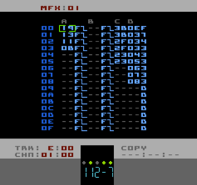

MultiFX Editor Page
MultiFX are fairly similar to Tables but with several major differences:
|
MultiFX Layout
The layout of a MultiFX is unashamedly cluttered and a little overwhelming at first glance but they are actually very simple. It's the lack of spaces between the columns for each voice that makes them hard to read, that's why you see the letters A, B, C & D at the top of the columns. The position of the letters marks the first column of values for each voice. You'll also see that the spacing is not equal between the voice markers. This is because only voices A & B have pitch, volume and duty values while voice C only has pitch information and voice D has pitch and volume.
From left-to-right the columns are:
|
sets the pitch for voice A. Values are absolute, 00 is the lowest pitch |
|
sets the amplitude for voice A, 00 to 0F |
|
sets the duty for voice A, values are waveform icons that represent the pulse width |
|
sets the pitch for voice B. Values are absolute, 00 is the lowest pitch |
|
sets the amplitude for voice B, 00 to 0F |
|
sets the duty for voice B, values are waveform icons that represent the pulse width |
|
sets the pitch for voice C. Values are absolute, 00 is the lowest pitch |
|
sets the noise frequency for voice D. 00 to 0F is 'normal' noise, 10 to 1F accesses the 'tone' noise (metallic sounding) |
|
sets the amplitude for voice D, 00 to 0F |
All Voices?
Whilst you can use all four voices (A, B, C & D) simultaneously, you probably don't always want to. To have a MultiFX ignore one of the voices, just clear the Pitch cell(s) ('--') and no registers for that voice will be written for that step(s) of the MultiFX.
MultiFX Operation
Similar to Tables, Pulsar processes MultiFX from top to bottom. The rate at which Pulsar steps through the MultiFX is actually determined by the Command that is used to trigger one - Fxx0-F while the left-hand digit sets the MultiFX speed, 0-F with 0 being the slowest speed. Whilst being compact and simple, this feature also means you can get more mileage out of a single MultiFX simply be varying the playback speed in the Fxx command.
What Do MultiFX Actually Do?
In essence they're like multi-voice sound effects and they just stuff pitch, amplitude and duty values into the NES's sound registers right at the end of the audio processing chain. By doing this, while there is activity on a voice in the MultiFX, they overwrite whatever is normally playing on those voices. When the MultiFX ends (or there is empty cells), whatever audio is supposed to be heard will be heard again as if nothing happened.
They are primarily designed to create synthesised drums, conveniently but complex and rich. That's not to say you couldn't do pretty much anything with them - create glitches, little one-shot arpeggios, multi-voice chords, weird effects etc.
Trigger From Any Track?
Yes. Probably one of the coolest features of MultiFX is that you can place the triggers for them in Patterns used in ANY of the five Tracks of your Song (even the DCM track, Track E!). This means that they're easy to slot into your Patterns wherever you have a spare cell in the Command column.
Priority
MultiFX take priority over everything else (apart from DCM - DCM is not used in MultiFX) wherever they are played. If you happened to play more than one MultiFX simultaneously, the Tracks are processed from left-to-right so the rightmost Track will always be highest priority.